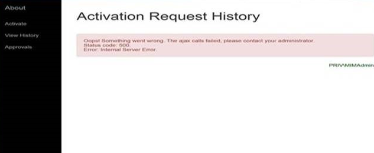
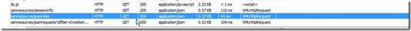
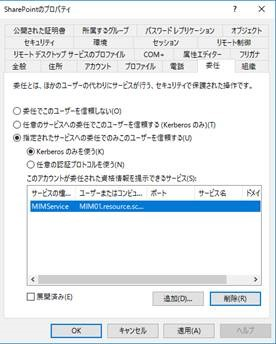
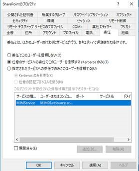

こんにちは、Identity Manager サポート です。
MIM 2016 SP1 の Privilege Access Management(PAM) をご利用いただく際に、いくつかの rest API が HTTP 404 や 500 エラーが出力される場合があります。


この際の対応手順について、ご紹介します。
回避策としては、以下の通り MIM のサービスアカウントの権限の委譲を以下の通り実施します。
実施後は、MIM サーバー上にて、iisreset にて IIS サービスの再起動を実施ください。
変更前

変更後

この事象は、Off box と呼ばれる新しい委任に関連する機能の問題によるものとなります。
MIM 2016 SP1 にて PAM 機能をご活用の際はご注意ください。